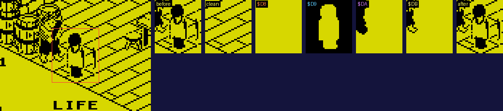
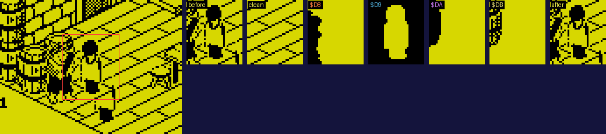
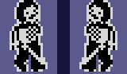

| How a moving object is drawn |
Fairlight never redraws the screen as a whole once a room is up. When something moves, the game rebuilds only the rectangle of screen its sprite covers, straight onto the screen, from the clean copy of the room and four 256-byte pages of working memory. What the pages hold decides what is in front of what. This page follows one such redraw in a real room, through the game's own code, once with another object behind the one redrawn and once with it in front.
Every object's update ends in REDRAW_OBJECT, the author's SRP, with its record. It copies the record's first twelve bytes to $FFE4 on -- the sprite's place, size and image -- and works on the rectangle they give, made three rows taller at the top and at the bottom, in five steps:
The compositor's rule, for each byte:
So the objects in front are never redrawn at all. The screen already shows them, and page $D8 simply keeps the compositor's hands off those pixels.
Room 2, with the troll frozen where it stood (bit 7 of GAME_FLAGS, which the type-5 thing sets) and the knight put beside it: when this page was built the game was stopped where the knight's redraw hands the rectangle to the compositor (REDRAW_OBJECT, at $ED44), and the pages read out, each as rows of the rectangle's width in bytes and one more (4 bytes by 37 rows here). First the knight nearer the viewer, at 50, 78, 114 with the troll at 50, 80, 130 -- 16 less along +8, their boxes apart but their sprites overlapping:

The knight in front of the troll. From the left: the screen afterwards, with the rectangle outlined in red; the rectangle on the screen before; the clean copy there; page $D8, empty, for nothing stands in front of him; page $D9, his mask with three rows of nothing above and below; page $DA, the cover of what is behind him; page $DB, what that shows; and the screen after the compositor. All are in the room's colours, black ink on its paper; the clean copy and the pages have no colours of their own, and a bit set in them is shown as ink.
The list at page $DA held records 19, 10 -- the troll is record 19, and record 10 one of the things stacked by the wall -- and page $DB what they show. Then the knight farther off, at 66, 78, 130, 16 more along +6 than the troll:

The troll in front of the knight: now page $D8 holds the troll's cover, so the screen keeps the troll where it overlaps him, and the troll is not on the list, which held only record 10, one of the things stacked by the wall behind him.
Depth comes from IS_IN_FRONT: an object stands in front of another unless it lies wholly beyond it along some axis -- its +6 at or past the other's far edge along +6 (FAR_CORNER works out +6 plus +9), its top at or below the other's floor, or its +8 at or past the other's far edge along +8. Greater +6 and +8 are farther from the viewer. It is asked only of objects whose sprites overlap, and one answer is enough to order two of them.
SORT_AND_DRAW_BEHIND sorts the list so that each object is drawn before anything in front of it. An isometric scene has no single depth to sort by, so it works by moving: for each place in turn, if any later entry stands in front of the one there, that one is taken out, the rest close up, it goes on the end, and the place is looked at again. Three objects can each stand in front of the next, and then this would go round for ever; fifty moves at each place (IY+$7E) is the limit. The list -- record numbers, thirty bytes at most -- is copied up to $FFC6 before pages $DA and $DB are cleared, and drawn from its end back: each object's cover ORed into $DA and cleared out of $DB, then its image ORed into $DB.
Still things -- doors, and objects that never move -- are on the list too, but are already in the clean copy, so behind the redrawn object they are skipped until the first live object in the drawing order: from there on they are drawn as well, since they may cover it. As a room is entered the same machinery draws the still things into the picture (DRAW_STILL_THINGS, with bit 4 of GAME_FLAGS set), leaving the live ones out.
DRAW_SPRITE is the one routine that draws objects, and it never touches the screen: it draws into a page, laid out as the rectangle, clipped to it and shifted to the pixel. A sprite is its image and then its mask, each its width in bytes by its height in rows. The mode says what goes where:
| Mode | For | Into | What |
|---|---|---|---|
| $80 | the object redrawn | $D9 | its mask, with three rows of nothing covered above and below |
| 0 | an object in front | $D8 | its cover: the mask inverted, a bit set where it shows |
| 4 | an object behind | $DA (and $DB) | its cover, ORed in, and cleared out of $DB |
| 8 | an object behind | $DB | its image, ORed in |
The shift is done by jumping into a run of seven RRCAs: before each sprite the routine writes 7 less x mod 8 into the displacement of the JR in front of them (DRAW_SPRITE_ROWS), and the masks for the two parts of a shifted byte into the operands of three ANDs. The compositor does the same for the object's own image. The listing shows those operands as the tape has them.
Every sprite has two views, towards the viewer and away. The other two directions are the same views mirrored -- and the mirroring is done to the sprite bytes themselves, in memory, when an object turns (MW): each row turned end for end, bytes and bits. The knight's fourteen frames turn together (MIMAN); so do the troll's six (MITRO) and the wraith's two (MIWRAI). Bit 5 of +14 records which way round the bytes are now.

The bytes of the knight's first walking frame (SPRITE9110) in memory, walking down +8 (A, left) and then down +6 (H, right): the same bytes, turned end for end in place.
Turning the knight round is dear: measured when this page was built, the call that mirrored his frames took 483,766 T-states, more than a whole pass usually takes, while the next pass's call, finding them the right way round, took 315: the pass in which he turns takes that much longer. And since the bytes are shared, a record's bit 5 is only true if one object uses them: no room has two trolls or two wraiths, and leaving a room turns them back (SAVE_OBJECT_POSITIONS) so the next room's, whose record comes fresh with bit 5 clear, agrees with them. The knight's +14 is kept through a new game for the same reason.
Ville Krumlinde's disassembly traced the blit well -- the rewritten JR into the RRCAs, the rewritten masks, the spill into the next byte -- and several names here are his. He concluded that pages $DA and $DB never reach the screen, since the compositor loads B with $D8: it does, and then steps B through $D9, $DA and $DB with INC B, in exactly the instructions his snapshot had jumped over (the JRs the compositor rewrites held other values when his snapshot was taken). The frame above shows $DA and $DB at work. He also has modes 4 and 8 drawing the other planes: the plane offset is added when bit 3 is clear, so mode 8 draws the image and the others the mask. And page $D8 is not a leftover room buffer but the cover of what is in front.